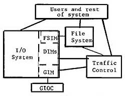
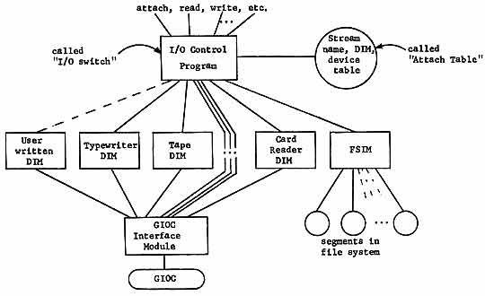
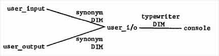
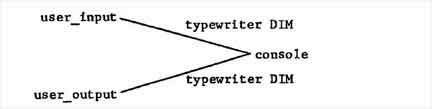
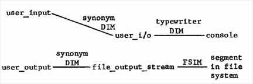
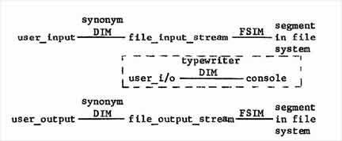
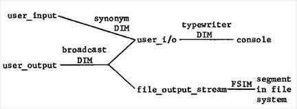

The Multics Input/Output System
ABSTRACT
An I/O system has been implemented in the Multics system that facilitates dynamic switching of I/O devices. This switching is accomplished by providing a general interface for all I/O devices that allows all equivalent operations on different devices to be expressed in the same way. Also particular devices are referenced by symbolic names and the binding of names to devices can be dynamically modified. Available I/O operations range from a set of basic I/O calls that require almost no knowledge of the I/O System or the I/O device being used to fully general calls that permit one to take full advantage of all features of an I/O device but require considerable knowledge of the I/O System and the device. The I/O System is described and some popular applications of it, illustrating these features, are presented.
Introduction
In many early operating system designs the software known as the input/output control system (IOCS) played a central conceptual and functional role. In the pre-multiprogramming, batch operating systems, many supervisory functions had to do with input/output control -- e.g., control over queued jobs, control for management and operation of secondary storage, control for operation of display devices and other peripheral equipment, etc. A system programmer (or subsystem designer) for such operating systems could hardly prove his professional competence without acquiring a reasonable familiarity with the intricacies of the IOCS for his "installation". By contrast the role played by the input/output control system in a Multics system is decidedly secondary, at least from a conceptual point of view. In fact, many or even most subsystem designers are able to achieve their respective objectives while remaining entirely oblivious to the IOCS details of Multics.

Figure 1. The I/O System's relationship
to some other important Multics facilities.
This is possible partly because two operations sometimes associated with the IOCS have been separated into separate functional units which are made use of by other parts of the system as well as the IOCS. First, the file system [1] makes known and dynamically links files that are stored within the system to processes that legitimately request this service. It does not matter on what storage device these files reside at the time of the request. The users (or for that matter other supervisory modules) are unaware of any explicit data movement in accessing these segments even though physical transfer from actual secondary devices to central memory may occur. Secondly, the traffic controller [2] handles all multiplexing of processors including the relinquishing of a processor by a process and the awakening of processes which have been waiting for I/O transactions to be completed. What remains for the IOCS is strategic control of I/O devices and the binding of these devices with symbolic names used to represent them. Figure 1 illustrates the interrelationships of these modules.
The secondary role of the I/O System does not mean that Multics attempts to erect a barrier that prevents the (system or user) programmer from acquiring and exercising full control over I/O devices. On the contrary, user processes are able to "negotiate" with the system administrator, who controls distribution of I/O resources, to acquire particular I/O devices. Then, with user code, the user process may program the control of these I/O devices and operate them with the full freedom that is normally accorded a system programmer. In brief, the Multics I/O System has been designed using two important guidelines:
- the simplest, most commonplace use of it requires only a minimum of knowledge and skill -- and the overhead for such simple (common mode) use is also minimized.
- To extract more tailored (special purpose) services there is added cost -- both in the time that must be committed to understand how the tool works and in the actual overhead that will be incurred in execution.
The system to be described here stresses symbolic, hardware independent references to input/output devices. This scheme permits programs to be written largely independently of the devices they use and allows the devices to be assigned at the time the computation is performed and changed dynamically during the run. Although other systems [3,4,5] have made use of symbolic referencing, the Multics system attempts to provide extreme ease of modification and almost total device independence, to the limits possible.
The I/O System does not in itself provide formatted I/O such as that typically found in many languages and library subroutines. Also, the details of operating specific devices are relegated to a minor role. What remains is an intermediate level of I/O software that forms the conceptual heart of the I/O System in Multics and will now be described.
Overview of the I/O System
A primary objective of Multics is to make the input/output operations stated in the programs or service procedures that a user writes specify only those device functions that are required for the application at hand, leaving to the system the responsibility for gauging the degree of device independence implied by the user's request. In this way a user who invokes such service procedures is free to designate substitute devices as may be appropriate, while adhering to the device dependencies that are implied by the stated I/O function requests. For example, a program may output a long string of characters. If the device currently associated with this output is a typewriter the I/O System should insert carriage returns when the end of the carriage is reached. However, if the output device is a tape then no carriage returns are necessary. For this reason user-coded I/O operations should ordinarily be independent (or as independent as feasible) of the particular device and model, or even of the type of device, e.g., typewriter, as opposed to teletype or paper tape.
There are two clear motivations for this crucially important objective. First, we must presume that at any given time a system will generally accommodate several types of I/O devices and models. Each is likely to require different programmed control. Each may have different character sets, and may be intrinsically different in various respects (e.g., line printers are not backspaceable, magnetic tapes are; some tapes cannot be read backwards as well as forwards, while card readers are never designed to read cards backwards, etc.). It is, however, desirable to be able to run programs using devices other than those for which they were originally written. Second, we presume that I/O devices become obsolete and, over time, are replaced by new models of the same or different types, e.g., video keyboards may replace typewriters. Clearly, if programs are to be usable over long periods of time, if programs are to be repeated with minor or no variation in the nature or effect of their I/O operations, then recognition of device independence must be a planned part of the programming system for I/O operations.
One approach to design for the needed device independence is to regard the I/O resource needed to complete any given I/O operation not as a real or physical resource, as for instance a particular card reader, but as a virtual (pseudo) I/O resource that is described in terms of the functions it must be capable of performing, which is mapped by the system to a particular real resource at run-time. Such an approach implies that all available input devices, regardless of tyPe (or location) are in some sense acceptable equivalents and all output devices are correspondingly equivalent.
The user must, when he so chooses, be able to decide what I/O devices of the ones available to him he wants used. In other words the user must be able to specify which physical resources the pseudo resources correspond to. It may also be necessary for the user to provide detailed I/O coding for the control of a device if such a device is not already known to the system.
The particular design approach taken in Multics is based on two practical requirements, one having to do with the system's responsibility for dispensing and recovery of all real I/O devices, and the other having to do with the run-time mapping of valid user-coded I/O operations, regardless of their degree of specificity, onto specific devices and in the manner and with controls appropriate to those specific devices.
First, it is recognized that at any given time, as a consequence of the I/O device needs of a process, certain specific I/O devices (or device capabilities) must be exclusively allocated to specific processes or sets of processes. The question of how the I/O System decides how to allocate devices, how to reclaim devices, and how to insure exclusive use of a device by the intended processes is largely independent of the central theme of this discussion, the structure of the I/O System, and, although important, will not be discussed here.
Second, any programmed I/O operation should at source level, at least, be expressed (coded) in a general way that specifies the I/O source or sink, not by its device designation but only by a place holder name for that source or sink. (Moreover, as an added convenience to users, it may be possible to code certain standard I/O operations so that even this name may be inferred from context.)
For example, [and here we illustrate only schematically], rather than use a specific device designation such as in the following form:
or
we might instead say:
or
depending on the syntax of the coding language being used.
Here in example (2) , "Billy" and "my_console" are simply identifiers for sources of data. For such a read statement to have any meaningful effect, the specific device represented by that identifier must be bound to or "attached" to (i. e., associated in some way with) "Billy" or "my_console" at some time after the device is allocated to the process and before the read statement is executed. The Multics I/O system is responsible for maintenance and supervision of these device-source name associations. Similarly for output, names for sinks are used in write statements rather than actual output device designations. Thus by analogy to the read examples in (2) above we could conceivably picture something like
in which "his_console" is here intended to suggest the name of some sink (output device). The attachment at any given time may be to one of a set of several (different) devices. Thus, if a single process had several consoles allocated, the process could simulate a "party-line" conversation on the several consoles where the name "his_console" could be attached and reattached, possibly cyclically, among the several different allocated devices.
The name chosen for elements of the set {source, sink} is stream. Conceptually, the attaching of a stream name to a particular device is a form of parameter binding. The device designation plays the role of the actual argument and the stream name that of the formal parameter. In order to apply more than one "argument" to the same "parameter" Multics provides for the detaching of a device (designation) from a stream name so that subsequently another device can be attached to the same stream name.
To carry out a read or write operation (call) of the type suggested in (2) and (3) above, the following steps can now be visualized. The system module that received and is responsible for "interpreting" this call must first perform a table look-up to determine the device designation (and type of device, constraint rules, if any, for use, etc.) that is currently associated with the named I/O stream parameter. In principle, assuming the I/O call parameters are consistent with the data kept in this so-called Attach Table, this same I/O control module can then then request into an I/O action-- i.e., by initiating the desired I/O operations after generating the required channel commands, etc. Because the system must be capable of supporting an open-ended number of devices, device types, and controllers, considerably more modularity is called for. So, in actual fact, the I/O control module (called the I/O switch) merely transmits the now more specific I/O request as a call to an appropriate "specialist" module, a Device Interface Module (DIM), for each type of device. A list of DIMs currently in general use in Multics is given in Appendix B. This DIM in turn takes charge of getting the I/O request accomplished as suggested in Figure 2.

Figure 2. Simplified view of I/O System Organization.
It is, therefore, the function of the DIM to convert the I/O request into a set of specific channel commands for the particular device associated with this DIM. The DIM knows both the conventions of the I/O System and the conventions of a particular I/O device and functions as a translator from one set of conventions to the other. In order that all devices may be fully exploited it is necessary that the I/O System "language" be carefully chosen. The I/O System calls of Multics are described more fully later and in Appendix A.
Description of the I/O System
The Device Interface Module converts a generalized I/O request into specific instructions understandable by a particular device. In doing this, it must compile a program for the hardware General Input Output Controller (GIOC) [6] which it can in turn supply to the target channel. The compiled program reflects the idiosyncrasies of the particular device to which the stream is attached. It (the program) may include line controls in the case of remote terminals, select instructions in the case of tapes, and so forth. In addition, the DIM may need to convert the internal character code used by the system into an appropriate character code for the device. Typewriter terminals for example, come in many different varieties. Virtually every different variety has different character codes.
The Device Interface Module after compiling a program for the GIOC, calls a module that serves as an interface for the GIOC to start the I/O using this GIOC program. It is the DIM's responsibility to interact with the GIOC Interface Module (abbreviated as GIM) until this I/O request has been completed.
The GIOC Interface Module is responsible for the overall management of the GIOC. Thus, the GIM is also responsible for overall monitoring of the operation of the GIOC. This requires answering interrupts (i.e., that its code acts as an interrupt handler for), recognizing completion of tasks, and transmitting to its caller status information deposited by the GIOC.
It may be necessary for the DIM to wait for a particular I/O operation to complete and/or be awakened when it does occur. For this purpose an entry is provided in the traffic controller that causes the process to be suspended until it is reawakened. When the awaited operation completes, the GIM (which is invoked by a hardware interrupt from the GIOC) calls the traffic controller to awaken the suspended process. This is the interface between the traffic controller and the I/O System. All multiplexing of processors is, therefore, accomplished by the traffic controller.
The I/O System is implemented by a set of subroutine calls, twenty at present. The stream-DIM association is established by the attach call:
This call creates an entry in the Attach Table for the stream identified by stream name, if one does not already exist, and associates the DIM identified by DIM name with it. The DIM itself is then invoked to initialize (establish communication with the device and prepare it for further transactions) the device identified by device_name.
Once the device has been attached it may be utilized by issuing a read or write call:
call write (stream name, buffer) ;
Where stream name identifies the stream with which the desired DIM and device are associated, and buffer indicates the area from which data is to be written or into which data is to be read. The I/O switch, upon receiving a read or write call, finds the entry in the Attach Table associated with this stream and invokes the associated DIM at the read or write entry. The read and write calls represent the primary means by which all data enters or leaves the system.
In order to dissolve an attachment the detach call is used.
This call causes the association of the specified stream with any DIMs and devices to be dissolved.
The I/O switch invokes the associated DIM which in turn terminates (releases the device and ends communication with it) the associated device or devices. When the DIM returns control to the I/O switch the stream-DIM association in the Attach Table is deleted.
There are many other I/O System calls which concern aspects of the I/O System that are not of immediate concern to this discussion. These include calls to set device modes (readable only, writeable only, forward spaceable only, etc.), calls to operate devices synchronously or asynchronously (e.g., readahead and writebehind), calls to establish input delimiters, calls to determine the current device status, and calls to reposition the current read or write position of a device (e.g., tape spacing).
A short description of these calls is given in Appendix A.
A final I/O System call that is of interest here is the order call. This call provides the escape mechanism when an operation not implementable by any of the other generalized I/O System calls must be performed.
This call is transmitted by the I/O switch to the appropriate DIM which performs the operation indicated by request_name making use of data supplied in other information if necessary. Examples of order requests might be to repunch a card on a card punch or lock the keyboard of a console.
Up to this point discussion of input-output has been in terms of communication with physical devices. It has been shown that the only software that deals specifically with any single device is the DIM associated with that type of device. The I/O System, other than the DIMs, knows nothing of devices. It, therefore, follows that the I/O System does not necessarily have to communicate with a physical device, but that DIMs may be written to operate on the data to be input or output in any manner whatsoever. Such DIMs are said to be associated with a virtual or pseudodevice and are termed pseudo-DIMS.
The most important pseudo-DIM is the File System Interface Module (FSIM) which treats a segment in the Multics File System as an I/O device. When a segment in the file system is attached to a stream via the FSIM, read and write calls on that stream will cause data to be read from or written into the segment. The FSIM provides the interface between the I/O System and the File System in Multics. However, unlike many systems this interface is not heavily used because the File System is usually called directly.
Another class of DIM is one that translates one I/O call to another I/O call, i.e., its pseudo-device is a stream. A stream that is used as a pseudo-device is termed an object stream. The most important of this class of DIMs is the "synonym" module. When an attachment is made via the synonym module the specified device is another stream. Any subsequent calls to the first stream is transformed by the synonym module to the same call on the latter stream. The stream names are, therefore, synonymous.
Applications
In the Multics system certain stream names are established, by convention, for normal use. The first of these is "user_i/o". This stream is normally associated with the use;'s primary I/O device, e.g., in a normal console session "user_i/o" will be attached to the user's console. Two other stream names are also established: "user_input" and "user_output". These streams are normally attached to "user_i/o" via the "synonym" module as illustrated in Figure 3a, i.e. , they are made equivalent to "user_i/o". Since at present most programs that perform I/O intended to do so with the user's console, the stream names "user_output" and "user_input" are the ones used in calls-to the I/O System in these programs. This illustrates one of the important purposes of the "synonym" DIM, to permit the manipulation of stream attachments without having to attach and detach physical devices. The streams "user_input" and "user_output" could normally be attached directly to the user's console as shown in Figure 3b. However, this would force the console to be detached whenever these streams were attached to some other device. Detachment and subsequent reattachment implies that certain physical hardware action has been taken with regard to the device. In the use of a console this might include termination of communication with the console and subsequently having to reestablish this communication. It would not be difficult to indicate to the DIM to keep the device active, however, the use of synonyms is more straightforward and makes more visible the states of various devices, i.e., if they are attached they are active. In other words, synonyms are an easy, efficient method of changing the binding of streams to devices. Because of this use of synonyms the "synonym" DIM has been highly optimized for the simple switching described above.

Figure 3a. The standard attachment graph.

Figure 3b. A standard attachment graph without the use of the synonym DIM.
Some important and heavily used features of Multics serve to illustrate some of the advantages of this organization of the I/O System. A user of Multics may sometimes desire to redirect the output that could normally appear on his console to some other device. This situation usually arises because the output is lengthy and would require excessive amounts of time to print on a console. The Multics system provides a service by which the contents of segments in the file system may be printed on a high speed printer. Therefore, it is a fairly common occurrence for a user to redirect his output to a segment in the file system using the FSIM mentioned above so that it may be printed by the high speed printer or examined using a text editor. To do this the following I/O System calls must be made:
call detach ("user_output") ;
call attach ("user_output", "synonym", "file_output_stream") ;
The first call causes the segment, "segment_name", to become the receiver of all subsequent data directed to the stream "file_output_stream" by a write call. The second and third calls cause the stream "user_output", the stream on which all standard write calls ;re made, to be disassociated from "user_i/o", the stream associated with the user's console, and instead be attached to the new stream "file_output_stream". Again the use of synonyms is not mandatory but is included for the reason mentioned earlier. All subsequent output that would normally have appeared on the user's console would now be placed in the segment "segment_name". This new situation is depicted by the graph in Figure 3c.

Figure 3c. Output attached to a segment in the file system.
There are many instances in which a user wishes to issue the same set of commands (a command is a line typed at a user's console requesting some action to be performed by the computer) many times. Rather than doing so manually he may instead put the set of commands in a segment and then cause this segment to be read as input one command at a time. This may be done by the following I/O calls:
call detach ("user_input") ;
call attach ("user_input" , "synonym" , "file_input_stream") ;
The segment whose name is "input_segment_name" contains the commands to be executed. The action performed by these calls is analogous to those performed by the above calls concerning output. All subsequent standard read calls will cause input to be taken from the segment "input_segment_name".
Consider now the situation that results when both the standard input and output streams are attached to segments simultaneously. In this case direct communication with the user has been eliminated. The user controls his process only indirectly through the input segment. A process that is in this state, i.e., whose standard input and output streams are attached to segments rather than to an interactive console, for its entire lifetime is called an absentee process (see Figure 3d) .Absentee processes are the means by which background or batch jobs are implemented in Multics. The advantage of an absentee process from the system view is a better allocation of resources since absentee jobs may be scheduled at periods of low interactive demand. The point of interest here is that an absentee process, as opposed to an interactive process, is obtained by a few slightly different calls to the I/O System during process initialization and that no other special user or system programming is necessary.

Figure 3d. Absentee attachment graph. For a true absentee process that has never been attached to a console the attachment in the dashed box is unnecessary.
In order to restore the situation to the interactive state just two I/O calls are necessary for each of the standard input and output streams. Thus for the input stream there would be:
call attach ("user_input", "synonym", "user_i/o") ;
Upon completion of these two calls the standard input stream is again attached to the user's console. The stream "file_input_stream" remains attached to the input segment.
The "synonym" DIM, as mentioned earlier, is one example of a DIM that uses another stream as the device upon which it acts. Such modules are effectively spliced into the flow of control in that each such module gains control and in turn passes control onto another DIM invoked as a consequence of its call to the I/O System on its object stream. The "synonym" simply results in an identical call to the object stream. However, such a DIM could easily perform some useful operation before passing the call on. A good example of such an operation is code conversion on the data to be read or written. A simple example could be to reformat a string of characters meant to be written on a console with a wide carriage for writing on a narrow carriage by properly placing carriage returns in the data.
Similarly such an intermediary could be used to make one device appear as another device. For example, if a light pen were to be added to the system as a new input device, a DIM could be written to make data read from a segment via the FSIM simulate the input from the light pen in order that all the associated software may be checked out before the actual installation of the device.
A final example of such intermediate modules is the broadcaster. This DIM allows fan out of I/O System calls. Rather than having one stream as its object, the broadcaster may have several. A call on a stream attached via the broadcaster is transmitted to all streams attached to this stream via the broadcaster. This is simply an extension of the synonym module. For example, a user may wish to record all the output typed on his console in a segment of the file system. To do this he simply attaches the stream "user_output" to both "user_i/o" and "file_output_stream" as indicated in Figure 3e.

Figure 3e. Attachment graph with standard output written to both the user's console and a segment in the file system.
Conclusion
It is the purpose of the Multics I/O System to permit I/O operations to be specified in a device independent manner, thereby permitting easy interchange of devices while programs are in execution.
The designers of the I/O System have been able to achieve this goal largely because certain functions associated with I/O (file system, processor multiplexing) have been provided as independent facilities in Multics which are invoked by the I/O System as well as other programs. The method used to attain device independence is to define a set of I/O calls which are used to specify all I/O operations in a general manner. All devices are addressed symbolically by stream name and the binding of streams to devices can be modified dynamically.
The modular structure of the I/O System facilitates introduction of new devices. In order to logically add a device to the system, a user or system programmer need only provide the detailed I/O coding for that device in the form of a Device Interface Module. This ability to add new devices is necessary tO assure the system's longevity.
Users of the I/O System, may if they desire, bypass the general mechanism. Instead of making a general I/O call, programs can invoke Device Interface Modules or even the GIOC Interface Module directly. The user who takes this approach loses the switching capabilities, device independence, and other advantages that the general mechanism provides. So far, no Multics user has needed or chosen to bypass the general mechanism. Some users, however, write their own DIMs making use of the order call to specify special requests.
The applications described earlier indicate some of the most common uses of the I/O System. The facilities of file input and output and absentee are achieved easily both conceptually and in practice and could not have been provided, in such a general manner, without device independence and stream switching. The I/O System has also proved very useful for system development, e.g., when testing a program that normally uses the high-speed printer it is advantageous to use a less critical more accessible device than one of the two printers available. The capabilities present in the Multics I/O System, as described here, have, therefore, proved well worth the careful design effort necessary for its development.
Acknowledgment
During the many years since the Multics project began a great number of people have contributed in the formulating of ideas for the I/O System. People who have contributed significantly to this effort are F. J. Corbató, R. C. Daley, S. I. Feldman, E. L. Glaser, D. Levenson, J. Ossanna, D. Ritchie, J. H. Saltzer, and v. L. Vyssotsky. The authors would also like to acknowledge the work of S. Dunten, N. I. Morris, T. Skinner and D. Widrig for their work in designing the GIOC Interface Module.
Appendix A
The following is a list of general I/O System calls and a brief description of their functions. This list serves only as an indication of the type of operations that are thought to be necessary in Multics, not as a complete description of their operations. Complete descriptions are given in [7].
- attach
- establishes an association between a stream name, a device's control software (DIM), and a device. All subsequent operations on this stream will invoke the associated control software and will be performed on the associated device.
- detach
- destroys an association created by an attach call.
- read
- causes input to be taken from the device associated with the given stream and placed in the indicated buffer area.
- write
- causes output to be taken from the indicated area and written to the device associated with the given stream.
- seek
- modifies the current position of the read and write pointers for the device associated with the given stream.
- tell
- returns the current position of the read and write pointers for the device associated with the given stream.
- changemode
- changes the current mode of the device associated with the given stream and returns the old mode. Modes determine attributes of a device such as whether reading or writing is permitted.
- readsync
- determines whether or not the DIM associated with the given stream will perform read-ahead on the associated device. Performing read-ahead is to read input from a device before the read call is issued.
- writesync
- determines whether or not the DIM associated with the given stream will perform write-behind on the associated device. Performing write-behind is to write output on a device after the write call has returned.
- resetread
- erases all currently accumulated read-ahead from the device associated with the given stream.
- resetwrite
- erases all currently accumulated write-behind intended for the device associated with the given stream.
- worksync
- determines whether the device associated with the given stream is in workspace synchronous or asynchronous mode. Being in workspace synchronous mode means that when a read or write call returns, the I/O System is finished using the provided buffer area associated with this call. If the call was a read call the desired input has been placed in the buffer area. If the call was a write call the data has been taken from the buffer area. Being in workspace asynchronous mode means that buffers may still be in use by the I/O System after the call has returned. If a read call then the buffer area may not yet contain the desired input, but it will be filled in at some later time. If a write call then the data may not yet have been taken from the buffer, but the I/O System will do so at some later time. Workspace asynchronous mode allows programmers to perform asynchronous I/O transactions and multiplex their I/O calls.
- upstate
- returns the current status of a specific asynchronous transaction on the device associated with the given stream.
- iowait
- returns the current status of a specific asynchronous transaction on the device associated with the given stream. The iowait call will not return until the indicated transaction is complete, i.e., the I/O System is finished with the buffer area.
- abort
- causes the indicated transaction or transactions on the device associated with the given stream to be aborted.
- getdelim
- returns the current break characters and read delimiters for the device associated with the given stream. Break characters define the extent of canonicalization and erase and kill processing of input [7]. Read delimiters determine on which input characters a single read call is to cease reading.
- setdelim
- modifies the current break characters and read delimiters for the device associated with the given stream.
- getsize
- returns the length, in number of bits, of the size of a basic element to be read or written on the device associated with the given stream. For example, Multics uses seven bit ascii right adjusted in a nine bit field as its standard character set so the element size for character oriented devices is 9.
- setsize
- modifies the element size for the device associated with the given stream.
- order
- is used to specify device dependent requests to be executed by the DIM associated with the given stream. Examples include locking the keyboard of a console and unloading a magnetic tape.
Appendix B
The following list briefly describes the Device Interface Modules (DIMs) generally available and widely used in Multics. Detailed descriptions are given in [7].- Typewriter DIM
- currently operates all devices used as user consoles in Multics. These include Teletype Models 33, 35, and 37, IBM 1050 and 2741, Datel 30, ARDS, and Terminet 300.
- Synonym DIM
- causes two streams to become synonymous, i.e., all I/O calls (except attach and detach) on either stream result in the same I/O operations being performed.
- File System Interface Module
- causes segments of the file system to be treated as input and output devices.
- Multics Standard Tape DIM
- is used for reading and writing tapes in Multics standard tape format.
- Nonstandard Tape DIM
- is used for reading and writing tapes in any format.
- Card DIM
- is used for reading and punching punched cards.
- Printer DIM
- is used for writing to the high speed printers.
- ARPA Network DIM
- is used to input and output from the ARPA Network of which the M.I.T. Multics installation is a part.
- Communications Line DIM
- is used to read from and write to a dedicated PDP-8 over a high speed communications line that is connected to the M.I.T. Multics installation. This PDP-8 is used for monitoring of Multics and for graphics.
References
- Daley, R.C. and Neumann, P.G. , "A General-Purpose File System for Secondary Storage", AFIPS, 1965 Fall Joint Computer Conference, Vol. 27, Part 1, Spartan Books, Washington, D.C., pp. 213-229.
- Saltzer, J.H., "Traffic Control in a Multiplexed Computer System", Sc.D. Thesis, Department of Electrical Engineering, M.I.T., June (Available as M.I.T., Project MAC Technical Report No.30) .
- Lett, A. and Konigsford, W., "TSS/360: A TimeShared Operating System", AFIPS, 1968 Fall Joint Computer Conference, Vol. 33, Part 1, MDI Publications, Wayne, Pennsylvania, pp. 15-28.
- CP-67/CMS User's Guide, IBM, October, 1970.
- System/360 Operating System Concepts and Facilities, IBM, Form 128-6535-1, June, 1967.
- Ossanna, J.F., Mikus, L., and Dunten, S., "Communications and Input-Output Switching in a Multiplex Computing System", AFIPS, 1965 Fall Joint Computer Conference, Vol. 27, Part 1, Spartan Books, Washington, D.C., pp. 231-242.
- Multics Programmers' Manual, Preliminary Edition, M.I.T., April, 1971.
*Work reported herein was supported in part by Project MAC, an M.I.T. research program sponsored by the Advanced Research Projects Agency, Department of Defense, under Office of Naval Research Contract NOO1470-A-0362-0001. Reproduction is permitted for any purpose of the United States Government.
Third ACM Symposium on Operating System Principles, 1971